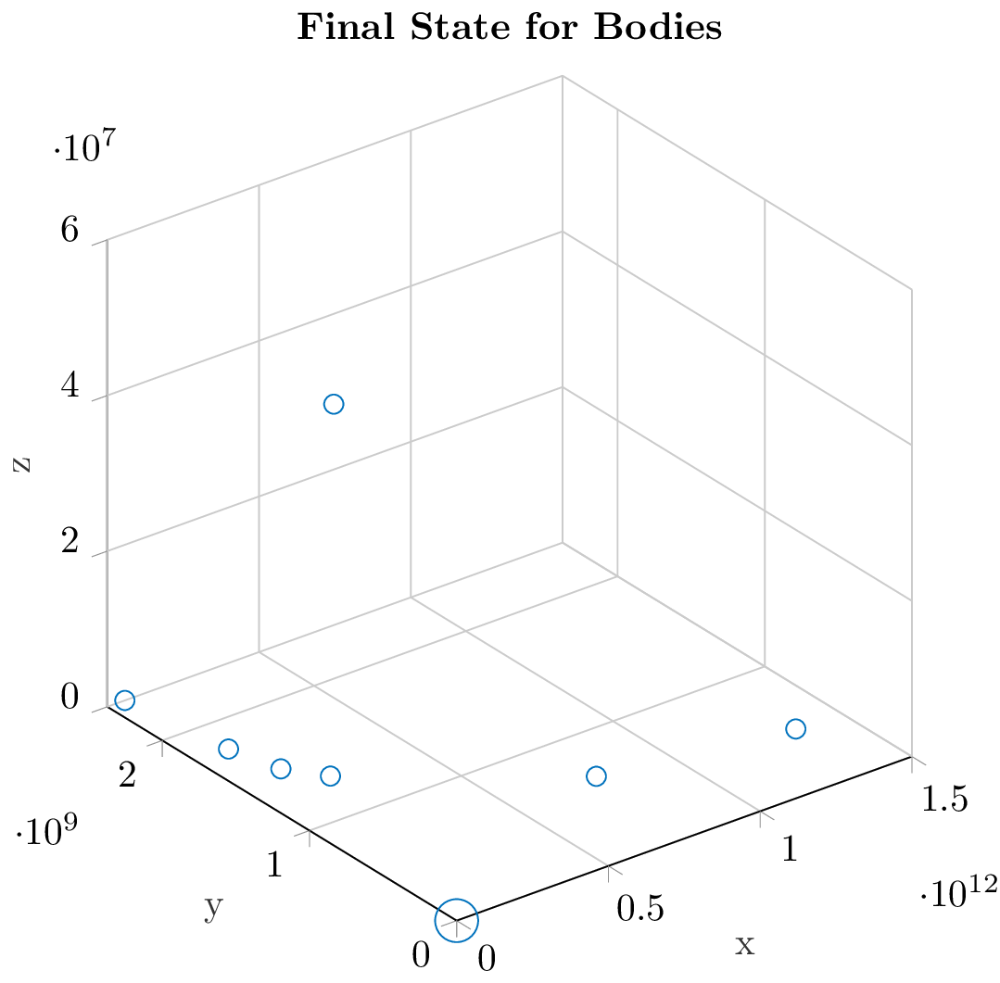

\documentclass{standalone}
\usepackage{pgfplots}
\pgfplotsset{compat=newest}
%% the following commands are needed for some matlab2tikz features
\usetikzlibrary{plotmarks}
\usetikzlibrary{arrows.meta}
\usepgfplotslibrary{patchplots}
\usepackage{grffile}
\usepackage{amsmath}
%% you may also want the following commands
%\pgfplotsset{plot coordinates/math parser=false}
%\newlength\figureheight
%\newlength\figurewidth
\definecolor{mycolor1}{rgb}{0.00000,0.44700,0.74100}
\begin{document}
% This file was created by matlab2tikz.
%
%The latest updates can be retrieved from
% http://www.mathworks.com/matlabcentral/fileexchange/22022-matlab2tikz-matlab2tikz
%where you can also make suggestions and rate matlab2tikz.
%
% This file was created by matlab2tikz.
%
%The latest updates can be retrieved from
% http://www.mathworks.com/matlabcentral/fileexchange/22022-matlab2tikz-matlab2tikz
%where you can also make suggestions and rate matlab2tikz.
%
\definecolor{mycolor1}{rgb}{0.00000,0.44700,0.74100}%
%
\begin{tikzpicture}
\begin{axis}[%
width=2.894in,
height=3.04in,
at={(0.487in,0.41in)},
scale only axis,
xmin=0,
xmax=1500000000000,
tick align=outside,
xlabel style={font=\color{white!15!black}},
xlabel={x},
ymin=0,
ymax=2374061464.1,
ylabel style={font=\color{white!15!black}},
ylabel={y},
zmin=0,
zmax=60000000,
zlabel style={font=\color{white!15!black}},
zlabel={z},
view={-37.5}{30},
axis background/.style={fill=white},
title style={font=\bfseries},
title={Final State for Bodies},
axis x line*=bottom,
axis y line*=left,
axis z line*=left,
xmajorgrids,
ymajorgrids,
zmajorgrids,
legend style={at={(1.03,1)}, anchor=north west, legend cell align=left, align=left, draw=white!15!black}
]
\addplot3[scatter, only marks, mark=o, color=mycolor1, mark options={}, scatter/use mapped color=mycolor1, visualization depends on={\thisrow{size} \as \perpointmarksize}, scatter/@pre marker code/.append style={/tikz/mark size=\perpointmarksize}] table[row sep=crcr]{%
x y z size\\
355.01516663 0.45633240291 3.1373940057e-05 5.59016994374947\\
57860329160 2374061464.1 0.00013618376453 2.51246890528022\\
108185770600 1773462602.7 0.0014797416918 2.51246890528022\\
149592556230 1502928808.9 2189.5755515 2.51246890528022\\
149592556110 1143477886.9 51023397.742 2.5\\
227916793400 1327644037.8 0.00021862720095 2.51246890528022\\
778499725250 656310053.74 4.2228335855e-07 2.51246890528022\\
1352549908400 484968085.96 6.0340446e-08 2.51246890528022\\
};
\end{axis}
\end{tikzpicture}%
\end{document}Created by David Li